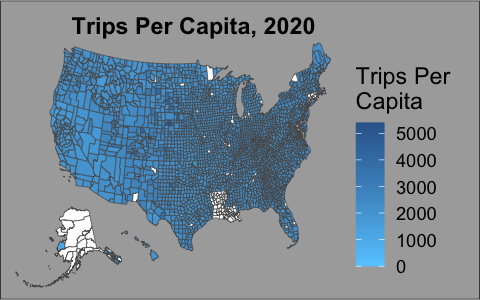
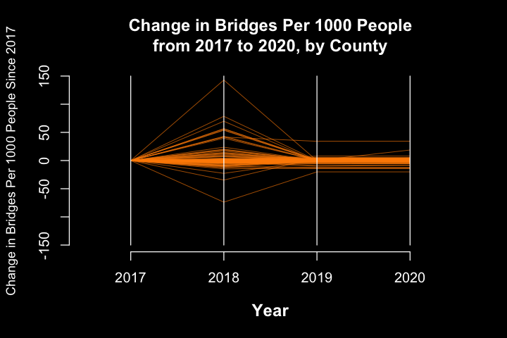
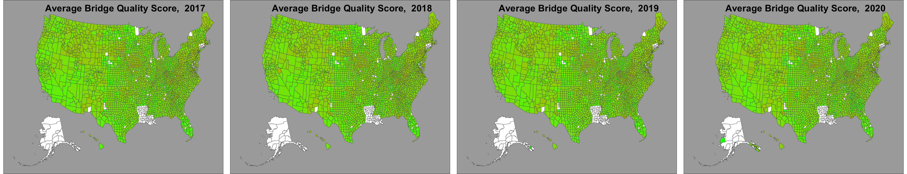
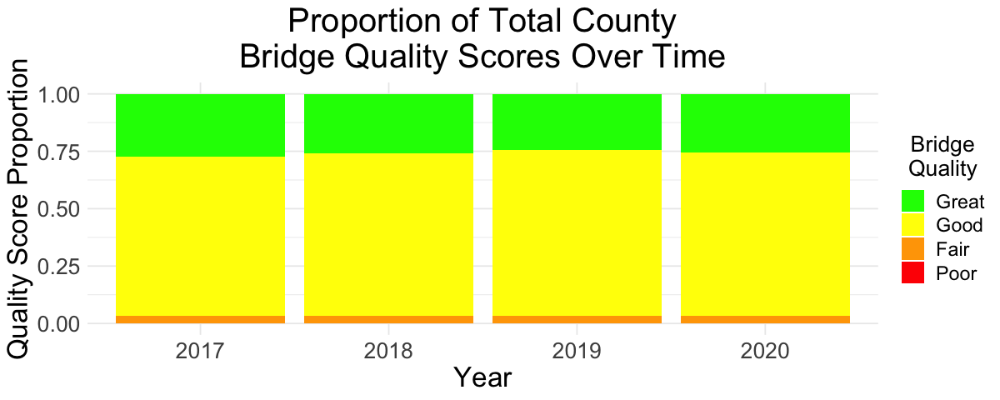

Code
library(tidyverse)
library(sf)
library(geojsonsf)
library(leaflet)
library(tmap)
library(spData)
library(usmap)
library(dplyr)
library(ggpubr)
library(plotly)
library(ggplot2)In this section, we explore how our selected variables change over time across the years for which they were collected. Specifically, we will explore changes in commuting frequency, bridge counts, and bridge quality.
We start by examining how travel frequency has changed nationally from 2019 to 2020. We focus on these years with a specific interest in exploring how the COVID-19 pandemic impacted commuting volumes.
tripFreq <- df[, c(which(colnames(df) %in% c("State","County","Year","Demographics_Population")), grep("Person.trips", names(df)))]
tripFreq$TotalTrips <- rowSums(tripFreq[, grep("Person.trips", names(tripFreq))])
tripFreq <- tripFreq[, c("State","County","Year","Demographics_Population","TotalTrips")]
# head(tripFreq)pops <- tripFreq %>%
group_by(County, State) %>%
summarize(pops = mean(Demographics_Population, na.rm = TRUE))
tripFreq <- tripFreq %>%
left_join(pops, by = c("County" = "County", "State" = "State"))
tripFreq <- tripFreq[complete.cases(tripFreq$TotalTrips), ]
tripFreq$TotalTrips.PerCap <- tripFreq$TotalTrips / tripFreq$pops
tripFreq <- tripFreq[, c("State","County","Year","TotalTrips.PerCap")]
# head(tripFreq)options(
repr.plot.width = 4,
repr.plot.height = 2.5
)
tf.2019 <- tripFreq %>% filter(Year == (2019))
plot.2019 <- ggplot() +
geom_sf(data = merge(counties, tf.2019, by.x = c("county","full"), by.y = c("County","State"), all.x = TRUE),
aes(fill = TotalTrips.PerCap)) +
scale_fill_gradient(name = "Trips Per\nCapita",
low = "#66CCFF", high = "#336699",na.value = "white",
limits = c(0, 5400)) +
theme_void() +
theme(legend.position = "right",
plot.title = element_text(hjust = 0.7, size = 14,
face = "bold", color = "black",
margin = margin(t = 10, b = -5)), # Adjust font size, face, color, and background of the plot title
plot.background = element_rect(fill = "#aaaaaa"), # Set background color of the plot
legend.title = element_text(size = 14), # Adjust font size of legend title
legend.text = element_text(size = 11),
legend.margin = margin(t = 0, r = 20, b = 0, l = 0)) +
labs(title = "Trips Per Capita, 2019")
plot.2019tf.2020 <- tripFreq %>% filter(Year == (2020))
plot.2020 <- ggplot() +
geom_sf(data = merge(counties, tf.2020, by.x = c("county","full"), by.y = c("County","State"), all.x = TRUE),
aes(fill = TotalTrips.PerCap)) +
scale_fill_gradient(name = "Trips Per\nCapita",
low = "#66CCFF", high = "#336699",na.value = "white",
limits = c(0, 5400)) +
theme_void() +
theme(legend.position = "right",
plot.title = element_text(hjust = 0.7, size = 14,
face = "bold", color = "black",
margin = margin(t = 10, b = -5)), # Adjust font size, face, color, and background of the plot title
plot.background = element_rect(fill = "#aaaaaa"), # Set background color of the plot
legend.title = element_text(size = 14), # Adjust font size of legend title
legend.text = element_text(size = 11),
legend.margin = margin(t = 0, r = 20, b = 0, l = 0)) +
labs(title = "Trips Per Capita, 2020")
plot.2020
options(
repr.plot.width = 10,
repr.plot.height = 5
)
tripFreq$countyAndState <- paste(tripFreq$County,", ",tripFreq$State,sep = "")
tripFreq.wide <- pivot_wider(tripFreq[, c("countyAndState","Year","TotalTrips.PerCap")], names_from = Year, values_from = TotalTrips.PerCap, id_cols = "countyAndState")
tripFreq.wide$diff <- tripFreq.wide$'2020' - tripFreq.wide$'2019'
par(bg = "black")
plot(0, type = "n", xlim = c(2018.95, 2020.05), ylim = c(-5000,6000),
xlab = "", ylab = "", xaxt = "n")
for (i in 1:nrow(tripFreq.wide)) {
lines(c(2019, 2020), c(0, tripFreq.wide$diff[i]), col = "#1B03A3", lwd = 0.5) # Plot a line for each row, with a different color
}
lines(c(2019,2020),c(0,0), col = "white", lwd = 2)
title(main = "Change in Per Capita Trips\nfrom 2019 to 2020, by County", col.main = "white", cex.main = 1.5)
title(xlab = "Year", col.lab = "white", font.lab = 2, cex.lab = 1.2)
title(ylab = "Change in Per Capita Trips", col.lab = "white", font.lab = 2, cex.lab = 1.2)
xlabs <- c("2019", "", "", "", "", "2020")
axis(1, at = seq(2019, 2020, length.out = 6), labels = xlabs, col = "white", col.axis = "white")
axis(2, col = "white", col.axis = "white")We explore infrastructural development over time as well, by exploring how bridge counts and quality have changed within recent years across the country.
bridgeQual <- df[, c(which(colnames(df) %in% c("State","County","Year","Demographics_Population")), grep("Bridges_Bridges..", names(df)))]
bridgeQual$bridgeCount <- rowSums(bridgeQual[, grep("Bridges_Bridges..", names(bridgeQual))])
bridgeQual <- bridgeQual %>%
mutate(qualityScore = (Bridges_Bridges..poor + (2*Bridges_Bridges..fair) + (3*Bridges_Bridges..good))/bridgeCount)
# head(bridgeQual)bridgeQual <- bridgeQual[order(bridgeQual$State, bridgeQual$County, bridgeQual$Year), ]
bridgeQual <- bridgeQual %>%
group_by(County, State) %>%
fill(Demographics_Population)
bridgeQual$bridgesPer1000 <- (bridgeQual$bridgeCount / bridgeQual$Demographics_Population)*1000
bridgeQual <- bridgeQual[, c("State","County","Year","bridgesPer1000","qualityScore")]
# head(bridgeQual)options(
repr.plot.width = 8,
repr.plot.height = 5.2
)
plotBridgePer1000 <- function(year){
bq <- bridgeQual %>% filter(Year == year)
bq.plot <- ggplot() +
geom_sf(data = merge(counties, bq, by.x = c("county","full"), by.y = c("County","State"), all.x = TRUE),
aes(fill = bridgesPer1000)) +
scale_fill_gradient(name = "Bridges Per\n1000 People",
low = "#fbefae", high = "#FF6600",na.value = "white",
limits = c(0, 20)) +
theme_void() +
theme(legend.position = "right",
plot.title = element_text(hjust = 0.7, size = 20,
face = "bold", color = "black",
margin = margin(t = 10, b = -20)),
plot.background = element_rect(fill = "#aaaaaa"),
legend.title = element_text(size = 14),
legend.text = element_text(size = 11),
legend.margin = margin(t = 0, r = 0, b = 0, l = -40)) +
labs(title = paste("Bridges Per 1000 People, ",year))
return(bq.plot)
}
plotQualityScores <- function(year){
bq <- bridgeQual %>% filter(Year == year)
bq.plot <- ggplot() +
geom_sf(data = merge(counties, bq, by.x = c("county","full"), by.y = c("County","State"), all.x = TRUE),
aes(fill = qualityScore)) +
scale_fill_gradient2(name = "Average Bridge Quality Score",
mid = "red", high = "green",na.value = "white",
limits = c(1, 3)) +
theme_void() +
theme(legend.position = "right",
plot.title = element_text(hjust = 0.7, size = 20,
face = "bold", color = "black",
margin = margin(t = 10, b = -20)),
plot.background = element_rect(fill = "#aaaaaa"),
legend.title = element_text(size = 14),
legend.text = element_text(size = 11),
legend.margin = margin(t = 0, r = 20, b = 0, l = 0)) +
labs(title = paste("Average Bridge Quality Score, ",year))
return(bq.plot)
}options(
repr.plot.width = 6,
repr.plot.height = 4
)
bridgeQual$countyAndState <- paste(bridgeQual$County,", ",bridgeQual$State,sep = "")
bridgeQual.wide <- pivot_wider(bridgeQual[, c("countyAndState","Year","bridgesPer1000")], names_from = Year, values_from = bridgesPer1000, id_cols = "countyAndState")
bridgeQual.wide$diff.2018 <- bridgeQual.wide$'2018' - bridgeQual.wide$'2017'
bridgeQual.wide$diff.2019 <- bridgeQual.wide$'2019' - bridgeQual.wide$'2017'
bridgeQual.wide$diff.2020 <- bridgeQual.wide$'2020' - bridgeQual.wide$'2017'
par(bg = "black")
plot(0, type = "n", xlim = c(2016.5, 2020.5), ylim = c(-150,150),
xlab = "", ylab = "", xaxt = "n")
for (i in 1:nrow(bridgeQual.wide)) {
lines(c(2017, 2018), c(0, bridgeQual.wide$diff.2018[i]), col = "darkorange", lwd = 0.5)
lines(c(2018, 2019), c(bridgeQual.wide$diff.2018[i], bridgeQual.wide$diff.2019[i]), col = "darkorange", lwd = 0.5)
lines(c(2019, 2020), c(bridgeQual.wide$diff.2019[i], bridgeQual.wide$diff.2020[i]), col = "darkorange", lwd = 0.5)
}
lines(c(2017,2017),c(-150,150), col = "white", lwd = 1)
lines(c(2018,2018),c(-150,150), col = "white", lwd = 1)
lines(c(2019,2019),c(-150,150), col = "white", lwd = 1)
lines(c(2020,2020),c(-150,150), col = "white", lwd = 1)
title(main = "Change in Bridges Per 1000 People\nfrom 2017 to 2020, by County", col.main = "white", cex.main = 1.2)
title(xlab = "Year", col.lab = "white", font.lab = 2, cex.lab = 1.2)
title(ylab = "Change in Bridges Per 1000 People Since 2017", col.lab = "white", cex.lab = 0.9)
xlabs <- c("2017","2018","2019","2020")
axis(1, at = seq(2017, 2020, length.out = 4), labels = xlabs, col = "white", col.axis = "white")
axis(2, col = "white", col.axis = "white")
options(
repr.plot.width = 27,
repr.plot.height = 5.2
)
ggarrange(plotQualityScores(2017) + theme(legend.position = "none"),
plotQualityScores(2018) + theme(legend.position = "none"),
plotQualityScores(2019) + theme(legend.position = "none"),
plotQualityScores(2020) + theme(legend.position = "none"),
ncol = 4)
options(
repr.plot.width = 10,
repr.plot.height = 4
)
bins <- c(1, 1.5, 2, 2.5, 3)
qualBins <- c("Poor", "Fair", "Good", "Great")
bridgeQual$scoreBin <- cut(bridgeQual$qualityScore, breaks = bins, labels = qualBins)
barChart <- table(bridgeQual$Year, bridgeQual$scoreBin)
barDf <- as.data.frame.matrix(barChart)
totals <- rowSums(barDf)
barDf$Year <- rownames(barDf)
rownames(barDf) <- NULL
for(c in qualBins){
barDf[c] <- barDf[c] / totals
}
barDf <- gather(barDf, key = "scoreBin", value = "Proportion", -Year)
barDf$scoreBin <- factor(barDf$scoreBin, levels = c("Great","Good","Fair","Poor"))
ggplot(barDf, aes(x = Year, y = Proportion, fill = scoreBin)) +
geom_bar(stat = "identity") +
labs(x = "Year", y = "Quality Score Proportion", fill = "Bridge\nQuality",
title = "Proportion of Total County\nBridge Quality Scores Over Time") +
scale_fill_manual(values = c("green", "yellow", "orange", "red")) +
theme_minimal() +
theme(
plot.title = element_text(hjust = 0.5, size = 24),
axis.title.x = element_text(size = 20),
axis.title.y = element_text(size = 20),
legend.title = element_text(hjust = 0.5, size = 16),
legend.text = element_text(size = 14),
axis.text.x = element_text(size = 16),
axis.text.y = element_text(size = 16)
)